Python testing in Visual Studio Code
The Python extension supports testing with Python's built-in unittest framework as well as pytest. Nose is also supported, although the framework itself is in maintenance mode.
After enabling a test framework, use the Python: Discover Tests command to scan the project for tests according to the discovery patterns of the currently selected test framework. Once discovered, Visual Studio Code provides a variety of means to run tests and debug tests. VS Code displays test output in the Python Test Log panel, including errors caused when a test framework is not installed. With pytest, failed tests also appear in the Problems panel.
A little background on unit testing
(If you're already familiar with unit testing, you can skip to the walkthroughs.)
A unit is a specific piece of code to be tested, such as a function or a class. Unit tests are then other pieces of code that specifically exercise the code unit with a full range of different inputs, including boundary and edge cases.
For example, say you have a function to validate the format of an account number that a user enters in a web form:
def validate_account_number_format(account_string):
# Return false if invalid, true if valid
# ...
Unit tests are concerned only with the unit's interface—its arguments and return values—not with its implementation (which is why no code is shown here in the function body; often you'd be using other well-tested libraries to help implement the function). In this example, the function accepts any string and returns true if that string contains a properly formatted account number, false otherwise.
To thoroughly test this function, you want to throw at it every conceivable input: valid strings, mistyped strings (off by one or two characters, or containing invalid characters), strings that are too short or too long, blank strings, null arguments, strings containing control characters (non-text codes), string containing HTML, strings containing injection attacks (such as SQL commands or JavaScript code), and so on. It's especially important to test security cases like injection attacks if the validated string is later used in database queries or displayed in the app's UI.
For each input, you then define the function's expected return value (or values). In this example, again, the function should return true for only properly formatted strings. (Whether the number itself is a real account is a different matter that would be handled elsewhere through a database query.)
With all the arguments and expected return values in hand, you now write the tests themselves, which are pieces of code that call the function with a particular input, then compare the actual return value with the expected return value (this comparison is called an assertion):
# Import the code to be tested
import validator
# Import the test framework (this is a hypothetical module)
import test_framework
# This is a generalized example, not specific to a test framework
class Test_TestAccountValidator(test_framework.TestBaseClass):
def test_validator_valid_string():
# The exact assertion call depends on the framework as well
assert(validate_account_number_format("1234567890"), true)
# ...
def test_validator_blank_string():
# The exact assertion call depends on the framework as well
assert(validate_account_number_format(""), false)
# ...
def test_validator_sql_injection():
# The exact assertion call depends on the framework as well
assert(validate_account_number_format("drop database master"), false)
# ... tests for all other cases
The exact structure of the code depends on the test framework you're using, and specific examples are provided later in this article. In any case, as you can see, each test is very simple: invoke the function with an argument and assert the expected return value.
The combined results of all the tests is your test report, which tells you whether the function (the unit), is behaving as expected across all test cases. That is, when a unit passes all of its tests, you can be confident that it's functioning properly. (The practice of test-driven development is where you actually write the tests first, then write the code to pass more and more tests until all of them pass.)
Because unit tests are small, isolated piece of code (in unit testing you avoid external dependencies and use mock data or otherwise simulated inputs), they're quick and inexpensive to run. This characteristic means that you can run unit tests early and often. Developers typically run unit tests even before committing code to a repository; gated check-in systems can also run unit tests before merging a commit. Many continuous integration systems also run unit tests after every build. Running the unit test early and often means that you quickly catch regressions, which are unexpected changes in the behavior of code that previously passed all its unit tests. Because the test failure can easily be traced to a particular code change, it's easy to find and remedy the cause of the failure, which is undoubtedly better than discovering a problem much later in the process!
For a general background on unit testing, see Unit Testing on Wikipedia. For a variety of useful unit test examples, see https://github.com/gwtw/py-sorting, a repository with tests for different sorting algorithms.
Example test walkthroughs
Python tests are Python classes that reside in separate files from the code being tested. Each test framework specifies the structure and naming of tests and test files. Once you write tests and enable a test framework, VS Code locates those tests and provides you with various commands to run and debug them.
For this section, create a folder and open it in VS Code. Then create a file named inc_dec.py with the following code to be tested:
def increment(x):
return x + 1
def decrement(x):
return x - 1
With this code, you can experience working with tests in VS Code as described in the sections that follow.
Enable a test framework
Testing in Python is disabled by default. To enable testing, use the Python: Configure Tests command on the Command Palette. This command prompts you to select a test framework, the folder containing tests, and the pattern used to identify test files.
You can also configure testing manually by setting one and only one of the following settings to true: python.testing.unittestEnabled, python.testing.pytestEnabled, and python.testing.nosetestsEnabled. Each framework also has specific configuration settings as described under Test configuration settings for their folders and patterns.
It's important that you enable only a single test framework at a time. For this reason, when you enable one framework also be sure to disable the others. The Python: Configure Tests command does this automatically.
When you enable a test framework, VS Code prompts you to install the framework package if it's not already present in the currently activated environment:
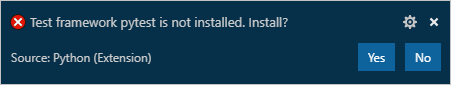
Create tests
Each test framework has its own conventions for naming test files and structuring the tests within, as described in the following sections. Each case includes two test methods, one of which is intentionally set to fail for the purposes of demonstration.
Because Nose is in maintenance mode and not recommended for new projects, only unittest and pytest examples are shown in the sections that follow. (Nose2, the successor to Nose, is just unittest with plugins, and so it follows the unittest patterns shown here.)
Tests in unittest
Create a file named test_unittest.py that contains a test class with two test methods:
import inc_dec # The code to test
import unittest # The test framework
class Test_TestIncrementDecrement(unittest.TestCase):
def test_increment(self):
self.assertEqual(inc_dec.increment(3), 4)
def test_decrement(self):
self.assertEqual(inc_dec.decrement(3), 4)
if __name__ == '__main__':
unittest.main()
Tests in pytest
Create a file named test_pytest.py that contains two test methods:
import inc_dec # The code to test
def test_increment():
assert inc_dec.increment(3) == 4
def test_decrement():
assert inc_dec.decrement(3) == 4
Test discovery
VS Code uses the currently enabled testing framework to discover tests. You can trigger test discovery at any time using the Python: Discover Tests command.
python.testing.autoTestDiscoverOnSaveEnabled is set to true by default, meaning test discovery is performed automatically whenever you save a test file. To disable this feature, set the value to false.
Test discovery applies the discovery patterns for the current framework (which can be customized using the Test configuration settings). The default behavior is as follows:
python.testing.unittestArgs: Looks for any Python (.py) file with "test" in the name in the top-level project folder. All test files must be importable modules or packages. You can customize the file matching pattern with the-pconfiguration setting, and customize the folder with the-tsetting.python.testing.pytestArgs: Looks for any Python (.py) file whose name begins with "test_" or ends with "_test", located anywhere within the current folder and all subfolders.
Tip: Sometimes tests placed in subfolders aren't discovered because such test files cannot be imported. To make them importable, create an empty file named
__init__.pyin that folder.
If discovery succeeds, the status bar shows Run Tests instead:
If discovery fails (for example, the test framework isn't installed), you see a notification on the status bar. Selecting the notification provides more information:
Once VS Code recognizes tests, it provides several ways to run those tests as described in Run tests. The most obvious means are CodeLens adornments that appear directly in the editor and allow you to easily run a single test method or, with unittest, a test class:
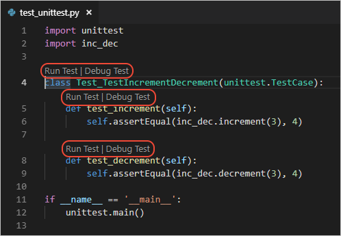
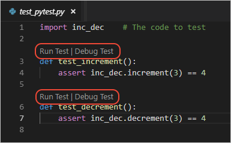
Note: At present, the Python extension doesn't provide a setting to turn the adornments on or off. To suggest a different behavior, file an issue on the vscode-python repository.
For Python, test discovery also activates the Test Explorer with an icon on the VS Code activity bar. The Test Explorer helps you visualize, navigate, and run tests:
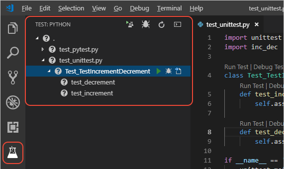
Run tests
You run tests using any of the following actions:
With a test file open, select the Run Test CodeLens adornment that appears above a test method or a class, as shown in the previous section. This command runs only that one method or only those tests in the class.
Select Run Tests on the Status Bar (which can change appearance based on results),
then select one of the commands like Run All Tests or Discover Tests:
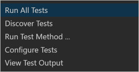
In Test Explorer:
To run all discovered tests, select the play button at the top of Test Explorer:
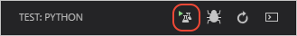
To run a specific group of tests, or a single test, select the file, class, or test, then select the play button to the right of that item:
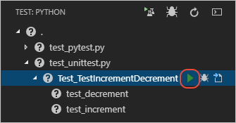
Right-click a file in Explorer and select Run All Tests, which runs the tests in that one file.
From the Command Palette, select any of the run test commands:
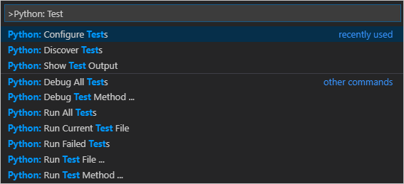
Command Description Debug All Tests See Debug tests. Debug Test Method See Debug tests. Run All Tests Searches for and runs all tests in the workspace and its subfolders. Run Current Test File Runs the test in the file that's currently viewed in the editor. Run Failed Tests Re-runs any tests that failed in a previous test run. Runs all test if no tests have been run yet. Run Test File Prompts for a specific test filename, then runs the test in that file. Run Test Method Prompts for the name of a test to run, providing auto-completion for test names. Show Test Output Opens the Python Test Log panel with information about passing and failing tests, as well as errors and skipped tests.
After a test run, VS Code displays results directly with the CodeLens adornments in the editor and in Test Explorer. Results are shown both for individual tests as well as any classes and files containing those tests. Failed tests are also adorned in the editor with a red underline.
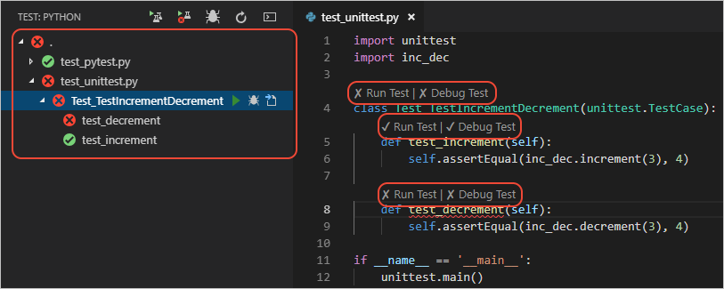
VS Code also shows test results in the Python Test Log output panel (use the View > Output menu command to show the Output panel, then select Python Test Log from the dropdown on the right side):
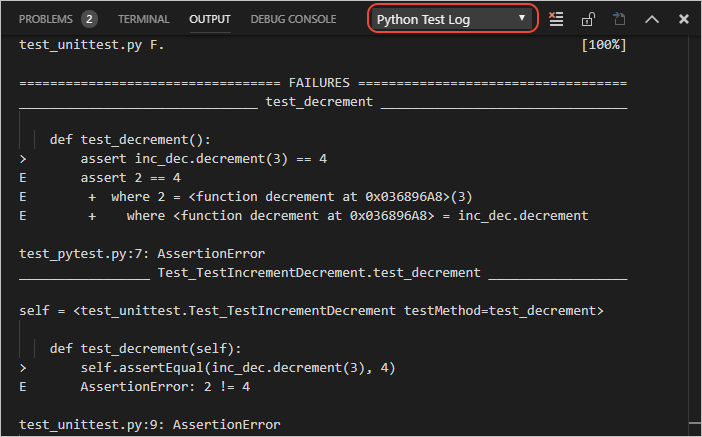
With pytest, failed tests also appear in the Problems panel, where you can double-click on an issue to navigate directly to the test:
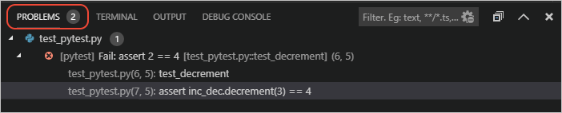
Run tests in parallel
Support for running tests in parallel with pytest is available through the pytest-xdist package. To enable parallel testing:
Open the integrated terminal and install the
pytest-xdistpackage. For more details refer to the project's documentation page.For Windows
py -3 -m pip install pytest-xdistFor macOS/Linux
python3 -m pip install pytest-xdistNext, create a file named
pytest.iniin your project directory and add the content below, specifying the number of CPUs to be used. For example, to set it up for 4 CPUs:[pytest] addopts=-n4Run your tests, which will now be run in parallel.
Debug tests
You might occasionally need to step through and analyze tests in the debugger, either because the tests themselves have a code defect you need to track down or in order to better understand why an area of code being tested is failing.
For example, the test_decrement functions given earlier are failing because the assertion itself is faulty. The following steps demonstrate how to analyze the test:
Set a breakpoint on first the line in the
test_decrementfunction.Select the Debug Test adornment above that function or the "bug" icon for that test in Test Explorer. VS Code starts the debugger and pauses at the breakpoint.
In the Debug Console panel, enter
inc_dec.decrement(3)to see that the actual result is 2, whereas the expected result specified in the test is the incorrect value of 4.Stop the debugger and correct the faulty code:
# unittest self.assertEqual(inc_dec.decrement(3), 2) # pytest assert inc_dec.decrement(3) == 2Save the file and run the tests again to confirm that they pass, and see that the CodeLens adornments also indicate passing status.
Note: running or debugging a test does not automatically save the test file. Always be sure to save changes to a test before running it, otherwise you'll likely be confused by the results because they still reflect the previous version of the file!
The Python: Debug All Tests and Python: Debug Test Method commands (on both the Command Palette and Status Bar menu) launch the debugger for all tests and a single test method, respectively. You can also use the "bug" icons in Test Explorer to launch the debugger for all tests in a selected scope as well as all discovered tests.
The debugger works the same for tests as for other Python code, including breakpoints, variable inspection, and so on. To customize settings for debugging tests, you can specify "request":"test" in the launch.json file in the .vscode folder from your workspace. This configuration will be used when you run Python: Debug All Tests and Python: Debug Test Method commands.
For example, the configuration below in the launch.json file disables the justMyCode setting for debugging tests:
{
"name": "Debug Tests",
"type": "python",
"request": "test",
"console": "integratedTerminal",
"justMyCode": false
}
If you have more than one configuration entry with "request":"test", the first definition will be used since we currently don't support multiple definitions for this request type.
For more information on debugging, see Python debugging configurations and the general VS Code Debugging article.
Test configuration settings
The behavior of testing with Python is driven by both general settings and settings that are specific to whichever framework you've enabled.
General settings
| Setting (python.testing.) |
Default | Description |
|---|---|---|
| autoTestDiscoverOnSaveEnabled | true |
Specifies whether to enable or disable auto run test discovery when saving a test file. |
| cwd | null | Specifies an optional working directory for tests. |
| debugPort | 3000 |
Port number used for debugging of unittest tests. |
| promptToConfigure | true |
Specifies whether VS Code prompts to configure a test framework if potential tests are discovered. |
unittest configuration settings
| Setting (python.testing.) |
Default | Description |
|---|---|---|
| unittestEnabled | false |
Specifies whether unittest is enabled as the test framework. All other frameworks should be disabled. |
| unittestArgs | ["-v", "-s", ".", "-p", "*test*.py"] |
Arguments to pass to unittest, where each element that's separated by a space is a separate item in the list. See below for a description of the defaults. |
The default arguments for unittest are as follows:
-vsets default verbosity. Remove this argument for simpler output.-s .specifies the starting directory for discovering tests. If you have tests in a "test" folder, change the argument to-s test(meaning"-s", "test"in the arguments array).-p *test*.pyis the discovery pattern used to look for tests. In this case, it's any.pyfile that includes the word "test". If you name test files differently, such as appending "_test" to every filename, then use a pattern like*_test.pyin the appropriate argument of the array.
To stop a test run on the first failure, add the fail fast option "-f" to the arguments array.
See unittest command-line interface for the full set of available options.
pytest configuration settings
| Setting (python.testing.) |
Default | Description |
|---|---|---|
| pytestEnabled | false |
Specifies whether pytest is enabled as the test framework. All other frameworks should be disabled. |
| pytestPath | "pytest" |
Path to pytest. Use a full path if pytest is located outside the current environment. |
| pytestArgs | [] |
Arguments to pass to pytest, where each element that's separated by a space is a separate item in the list. See pytest command-line options. |
You can also configure pytest using a pytest.ini file as described on pytest Configuration.
Note If you have the pytest-cov coverage module installed, VS Code doesn't stop at breakpoints while debugging because pytest-cov is using the same technique to access the source code being run. To prevent this behavior, include
--no-covinpytestArgswhen debugging tests, for example by adding"env": {"PYTEST_ADDOPTS": "--no-cov"}to your debug configuration. (See Debug Tests above about how to set up that launch configuration.) (For more information, see Debuggers and PyCharm in the pytest-cov documentation.)
Nose configuration settings
| Setting (python.testing.) |
Default | Description |
|---|---|---|
| nosetestsEnabled | false |
Specifies whether Nose is enabled as the test framework. All other frameworks should be disabled. |
| nosetestPath | "nosetests" |
Path to Nose. Use a full path if Nose is located outside the current environment. |
| nosetestArgs | [] |
Arguments to pass to Nose, where each element that's separated by a space is a separate item in the list. See Nose usage options. |
You can also configure nose with a .noserc or nose.cfg file as described on Nose configuration.
See also
- Python environments - Control which Python interpreter is used for editing and debugging.
- Settings reference - Explore the full range of Python-related settings in VS Code.